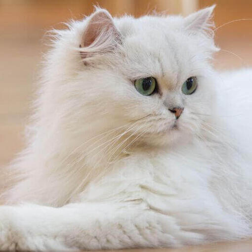

GATO PERSA
El persa suele ser un gato de tamaño medio, aunque es enorme y tiene huesos robustos. Con su gran cantidad de pelo, puede parecer más grande de lo que es en realidad. El persa es una raza de aspecto diferente. El cuerpo es corto pero grueso, con patas gruesas y un cuello corto y grueso. La cola es corta y las orejas son pequeñas. La cabeza es redonda y tiene unos ojos redondos y grandes. Si se observa de perfil, su cara es plana y la nariz cambia de dirección, de manera que lo que se ve es principalmente la carne colorida de la nariz. El pelo del persa es grueso, denso y largo. Aunque es fino, aparenta voluminoso y brillante.
DESCRIPCION DE RAZA
Es necesario controlar su alimentación para que se mantenga en buena forma. Dado que esta raza no tiene fama de realizar mucho ejercicio enérgico, es necesario vigilar su alimentación y asegurarse de que practique ejercicio con regularidad. Eso significa que el persa debe hacer ejercicio para mantenerse en perfecta forma física. Aunque a los persas les gusta jugar con sus propietarios y jugarán con juguetes interactivos, perseguirán pelotas y atacarán ratones de hierba gatera, eso no quita que puedas tener que insistir para que haga ejercicio a diario. Es necesario cuidar su pelo a diario. Se debe cepillar y peinar para evitar la formación de enredos. Además, hay que limpiar su cara plana con regularidad y cuidado, puesto que suele depositarse lágrimas en exceso en la cara.

El persa es una raza de gatos antigua y, como en otras razas antiguas, su historia es algo confusa. En el siglo XVI había gatos de pelo largo en Italia. Eran gatos que habían sido importados desde Asia. En el siglo XVIII, Pietro della Valle introdujo en Italia un gato de Persia para incorporar al programa de crianza. Aquel gato bien podía ser un gato conocido en Persia como el "gato de las arenas", un gato que vivía en el desierto. Aquel gato de las arenas tenía un pelo lanudo, muy parecido a un estropajo de acero, que lo protegía del entorno y le permitía vivir en la arena.
Un siglo más tarde, aproximadamente, Nicolas de Pereisc adquirió algunos gatos de pelo largo. Eran gatos procedentes de Turquía, que es también el hogar de los Angora turcos, una raza distinta de gato de pelo largo. En el siglo XIX, los descendientes de aquellos gatos turcos se cruzaron con algunos de los gatos de Italia, y ese fue el origen de la raza Persa moderna. Aunque esta raza es antigua, también es un producto del hombre.
La popularidad de los persas se vio incrementada cuando la reina Victoria y otros miembros de la realeza se enamoraron de esta impresionante raza. Se introdujeron en los Estados Unidos a finales del siglo XIX y no tardaron en ganar adeptos.